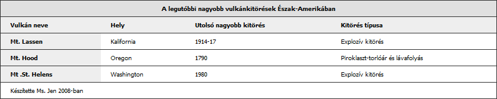

19. HTML táblázatok
- Előző leírás — HTML hivatkozások — építsük fel a webet!
- Következő leírás — HTML űrlapok — az alapok
- Tartalomjegyzék
Bevezető
„Ó jaj!” — hogyan tudom a webes szabványokkal ezt a rengeteg adatot megjeleníteni? A lelki szemeid előtt talán már meg is jelentek a többszörösen egymásba ágyazott elemek, amelyek szépen sorokba és cellákba szabályozzák az adathalmazt… de nem kell aggódnod, van megoldás — a táblázatok segítenek!
A webdesignban a táblázatokat nagyon jól lehet használni arra, hogy az adatokat rendezett módon jelenítsd meg. Más szóval, a táblázatokra, diagramokra és a többi hasonló grafikonra gondolhatsz úgy is, hogy ezek segítenek az információk összehasonlításában, kontrasztba állítják a különböző adatrészeket. Gyakran láthatsz ilyeneket weblapokon, például az elnökválasztás szavazatainak összehasonlításakor, sport statisztikákról, árak összehasonlításakor, méretek megjelenítésekor és még sok másféle adat esetén.
Az internet őskorában, még mielőtt a CSS elterjedt volna, mint egy HTML-től különálló prezentációs réteg, a táblázatokat gyakran használták a weblapok elrendezésének beállítására — oszlopokat, dobozokat hoztak így létre, és ezzel helyezték el a weblap különböző részeit az oldalon. Ez a lehető legrosszabb módszer az elrendezés megvalósítására; a táblázatos elrendezéssel kusza, zavaros lapokat kapunk egy halom egymásba ágyazott táblázattal — a végén csak hatalmas fájlok maradnak, amelyeket nehéz karbantartani és még nehezebb módosítani. Manapság még mindig nagyon sok oldalt találhatsz a neten, amelyek így épülnek fel, de a biztonság kedvéért te már a táblázatokat csak arra használd, amire készültek — vagyis adatok megjelenítésére —, és az elrendezés kialakításához használd inkább a CSS-t.
Ebben a leírásban megnézzük, hogyan kell helyesen használni a HTML táblázatokat. A felépítés a következő:
- A lehető legegyszerűbb táblázat
- Adjunk hozzá több funkciót
- Alakítsuk tovább a táblázatot
- Segít a CSS: legyen szebb táblázatunk
- Összefoglaló
- További olvasnivalók
- Tesztkérdések
A lehető legegyszerűbb táblázat
Először is építsük fel a táblázathoz szükséges szemantikus HTML kódot — a példában most Észak-Amerika vulkánkitöréseit fogjuk megnézni. Nagyon szeretem a vulkánokat, és gyerekkoromban sikerült is meggyőznöm az édesanyámat, hogy vigyen el ezekhez a vulkánokhoz, amikor meglátogattuk a nagymamát. Nagyon reménykedtem benne, hogy a vakáció alatt valamelyik ki fog törni, de sajnos hiába. Lássuk akkor az első táblázatunkat:
<table>
<tr>
<td>Vulkán neve</td>
<td>Hely</td>
<td>Utolsó nagyobb kitörés</td>
<td>Kitörés típusa</td>
</tr>
<tr>
<td>Mt. Lassen</td>
<td>Kalifornia</td>
<td>1914-17</td>
<td>Explozív kitörés</td>
</tr>
<tr>
<td>Mt. Hood</td>
<td>Oregon</td>
<td>1790</td>
<td>Piroklaszt-torlóár és lávafolyás</td>
</tr>
<tr>
<td>Mt .St. Helens</td>
<td>Washington</td>
<td>1980</td>
<td>Explozív kitörés</td>
</tr>
</table>
Ez a kód a következőképpen jelenik meg:
| Vulkán neve | Hely | Utolsó nagyobb kitörés | Kitörés típusa |
| Mt. Lassen | Kalifornia | 1914-17 | Explozív kitörés |
| Mt. Hood | Oregon | 1790 | Piroklaszt-torlóár és lávafolyás |
| Mt .St. Helens | Washington | 1980 | Explozív kitörés |
Lássuk, milyen részekből áll a fenti kódban látható HTML jelölés:
<table></table>: Atabletag mondja meg a böngészőnek, hogy a benne található tartalmat táblázatos formában szeretnéd elrendezni.<tr></tr>: Atrelemmel hozhatsz létre egy sort a táblázatban. Ezáltal a böngésző tudni fogja, hogy minden tartalmat a<tr>és</tr>tagek között vízszintesen rendezzen el, a táblázat egy sorában.<td></td>: Atdelemmel határozhatsz meg egy cellát a táblázatban, vagy más önálló tartalmat a soron belül. Figyelj arra, hogy mindig csak annyitdelemet használj a cellákhoz, amennyire az adatoknak szüksége van. Ne használj üres cellákat azért, hogy kitöltsd a helyet, vagy távolabb tedd egymástól a cellákat — ilyen esetekben használhatod a CSS-t, amellyel könnyen készíthetsz kitöltéseket a táblázatban. Ez nem csak azért jobb módszer, mert szétválasztja a megjelenést az adatoktól, hanem a táblázat struktúrája is érthetőbb lesz például a gyengénlátók számára, akik képernyő-felolvasóval férnek hozzá a táblázatod tartalmához.
Az alap elemeket a következőképpen ágyazhatod egymásba:
<table>
<tr>
<td>content</td>
<td>content</td>
<td>content</td>
</tr>
</table>
Ha más sorrendben használod őket, akkor az a böngésző számára olyan, mint egy hajcsomó: megpróbálhatja kigubancolni a kódot, de az eredmény nem garantált, sőt az sem biztos, hogy egyáltalán megjelenik a táblázat.
Adjunk hozzá több funkciót
Most, hogy már megvan az alap táblázatunk, adjunk hozzá néhány komplexebb funkciót is — először is adunk neki egy címet és az oszlopoknak egy fejlécet, amelyek javítják a táblázat szemantikáját, és egyúttal megkönnyíti a képernyő-felolvasókat használók életét is. A módosított táblázat így néz ki:
<table>
<caption>A legutóbbi nagyobb vulkánkitörések Észak-Amerikában</caption>
<tr>
<th>Vulkán neve</th>
<th>Hely</th>
<th>Utolsó nagyobb kitörés</th>
<th>Kitörés típusa</th>
</tr>
<tr>
<td>Mt. Lassen</td>
<td>Kalifornia</td>
<td>1914-17</td>
<td>Explozív kitörés</td>
</tr>
<tr>
<td>Mt. Hood</td>
<td>Oregon</td>
<td>1790</td>
<td>Piroklaszt-torlóár és lávafolyás</td>
</tr>
<tr>
<td>Mt .St. Helens</td>
<td>Washington</td>
<td>1980</td>
<td>Explozív kitörés</td>
</tr>
</table>
Ez a kód a böngészőben így jelenik meg:
| Vulkán neve | Hely | Utolsó nagyobb kitörés | Kitörés típusa |
|---|---|---|---|
| Mt. Lassen | Kalifornia | 1914-17 | Explozív kitörés |
| Mt. Hood | Oregon | 1790 | Piroklaszt-torlóár és lávafolyás |
| Mt .St. Helens | Washington | 1980 | Explozív kitörés |
A következő új elemeket használtuk ebben:
- <caption></caption>: A caption elemmel adhatsz egy címet a táblázat adatainak. A legtöbb böngésző alapesetben a címet középre helyezi, és a szélessége akkora lesz, mint a táblázaté, kivéve, ha ezt átállítod CSS-ben.
- <th></th>: A th elem jelöli a táblázat oszlopainak a fejlécét. Ez azért hasznos, mert szemantikusan is jelöli a tartalom funkcióját, valamint segít abban, hogy a böngészők és a különböző eszközök pontosabban jelenítsék meg a tartalmat. A fenti példa a th elem legegyszerűbb használatát mutatja be.
Alakítsuk tovább a táblázatot
A táblázat strukturálásában utolsó lépésként megadom a táblázat fejléc- és törzsszakaszait, hozzáadunk egy láblécet, valamint megadjuk a sorok és oszlopok hatókörét. Hozzáadunk még egy summary attribútumot is, amelyben összefoglaljuk a táblázat tartalmát. A végleges jelölés így a következőképpen néz ki:
<table summary="összefoglaló a legnagyobb vulkánkitörésekről Észak-Amerikában">
<caption>A legutóbbi nagyobb vulkánkitörések Észak-Amerikában</caption>
<thead>
<tr>
<th scope="col">Vulkán neve</th>
<th scope="col">Hely</th>
<th scope="col">Utolsó nagyobb kitörés</th>
<th scope="col">Kitörés típusa</th>
</tr>
</thead>
<tfoot>
<tr>
<td colspan="4">Készítette Ms. Jen 2008-ban</td>
</tr>
</tfoot>
<tbody>
<tr>
<th scope="row">Mt. Lassen</th>
<td>Kalifornia</td>
<td>1914-17</td>
<td>Explozív kitörés</td>
</tr>
<tr>
<th scope="row">Mt. Hood</th>
<td>Oregon</td>
<td>1790</td>
<td>Piroklaszt-torlóár és lávafolyás</td>
</tr>
<tr>
<th scope="row">Mt .St. Helens</th>
<td>Washington</td>
<td>1980</td>
<td>Explozív kitörés</td>
</tr>
</tbody>
</table>
Ez a kód a böngészőben így jelenik meg:
| Vulkán neve | Hely | Utolsó nagyobb kitörés | Kitörés típusa |
|---|---|---|---|
| Készítette Ms. Jen 2008-ban | |||
| Mt. Lassen | Kalifornia | 1914-17 | Explozív kitörés |
| Mt. Hood | Oregon | 1790 | Piroklaszt-torlóár és lávafolyás |
| Mt .St. Helens | Washington | 1980 | Explozív kitörés |
Most a következő új elemeket és attribútumokat használtuk fel:
- A
thead,tbodyéstfootelemek: Ezek határozzák meg a táblázat fejlécét, törzsét, valamint a láblécét. Hacsak nem olyan komplex táblázatot készítesz, amelyiknek sok oszlopa és sora van, ezeknek az elemeknek a használata már túlzásnak számít. A komplex táblázatokban viszont a használatukkal strukturáltabbá teheted a kódot, és megkönnyíted a böngésző és más eszközök dolgát is a táblázat értelmezéséhez. - A
colspanésrowspanattribútumok: Acolspanattribútum olyan cellát hoz létre, amelyik több oszlopot is áthidal. A fenti esetben a lábléc egyetlen cellájára azt szerettem volna, ha kitölti a teljes szélességét a táblázatnak, ezért azt adtam meg, hogy mind a négy oszlopot foglalja magába. Hasonlóan adhatod meg egy cellának arowspanattribútumot, amellyel így megadhatod, hogy hány sort vonjon össze a cella, például<td rowspan="3">. - A
summaryattribútum: Ezt az attribútumot arra használhatod, hogy megadj egy összefoglalót a táblázat tartalmáról, főként a képernyő-felolvasók számára (ugyanis a táblázat megjelenítésében ez nem látható). A régebbi W3C ajánlások, a WCAG 1.0 és a HTML 4.0 azt írja, hogy asummaryattribútumot a fent bemutatott módon használhatod. A specifikációk új tervezetei viszont már egyáltalán nem említik asummaryattribútumot. Mivel még nincs eldöntve asummaryattribútum használata, ezért mi a Webes szabványok sorozat keretein belül úgy döntöttünk, hogy a használata továbbra is biztonságosnak számít. Végül is nem ronthat el semmit, és hozzáférhetőségi szempontból előnyös. - A
scopeattribútum: Biztosan észrevetted athtagekben ascopeattribútumot, valamint azt, hogy ezúttal a vulkánok neveit is fejlécként definiáltam, a sorokon belül! Ez abszolút megengedett, de én nem inkább erőltetem. Ascopeattribútumot athelemben használjuk arra, hogy a képernyő-felolvasók tudják, hogy athtartalma egy oszlopra vagy egy sorra vonatkozik-e. Ascopeattribútumot csak athelemekben használhatjuk.
Segít a CSS: legyen szebb táblázatunk
A fent bemutatott elemek és attribútumok már elegendőek arra, hogy egy jó adattáblát készíthess. Most, hogy a HTML struktúra már megvan, néhány egyszerű CSS tulajdonsággal sokat javíthatunk a táblázat megjelenésén:
body {
background: #ffffff;
margin: 0;
padding: 20px;
line-height: 1.4em;
font-family: tahoma, arial, sans-serif;
font-size: 62.5%;
}
table {
width: 80%;
margin: 0;
background: #FFFFFF;
border: 1px solid #333333;
border-collapse: collapse;
}
td, th {
border-bottom: 1px solid #333333;
padding: 6px 16px;
text-align: left;
}
th {
background: #EEEEEE;
}
caption {
background: #E0E0E0;
margin: 0;
border: 1px solid #333333;
border-bottom: none;
padding: 6px 16px;
font-weight: bold;
}
Ha ezt alkalmazzuk az előző táblázatunkon, akkor a táblázat az 1. ábrához hasonlóan fog megjelenni. A példát megnézheted élőben itt is.
1. ábra: A táblázat most már sokkal jobban néz ki.
Ó, igen… jobban néz ki. A táblázatodat úgy jelenítheted meg, ahogyan csak akarod, de a fenti példa jó kiindulási alapnak szolgálhat. A táblázatok stílusozásáról CSS-sel egy későbbi leírásban többet is megtudhatsz, jelenleg elég lesz az is, ha megnézzük, hogy a CSS melyik része mire szolgál:
body: A fenti példában hozzáadtam a CSS-hez néhány tulajdonságot. Beállítottam a margót (ebben az esetben nullára), a kitöltést, hogy legyen egy kis hely, a háttérszínt (fehérre), a betűméretet és a betűcsaládot, valamint a sormagasságot a levegősebb sorok kedvéért. A fenti példakódot innen töltheted le — változtasd meg nyugodtan a CSS tulajdonságokat, és próbáld ki, mi hogyan működik.table: Beállítottam a kereteket a CSSbordertulajdonságával. Ahhoz, hogy ez jól működjön, be kellett állítanom aborder-collapsetulajdonságot is acollapseértékre, hogy összevonjam a táblázat kereteit, és hogy később aborder-bottomtulajdonság a teljes sorra vonatkozzon, és ne szakadjon meg minden cellánál. A szélességet 80%-ra állítottam (ez azt jelenti, hogy a táblázat a rendelkezésre álló szélesség 80%-át tölti ki; ha változtatjuk a böngésző szélességét, akkor a táblázat szélessége is változni fog).théstd: A fenti példa CSS-ben először balra igazítottam a szöveget, de te állíthatod középre is, sőt ha ath,tdéstrelemekhez osztályneveket rendelsz, akkor a CSS-ben külön állíthatod a sorok, oszlopok, fejlécek stílusát. Mind ath, mind atdelemekhez adtam egy kevés kitöltést, hogy szélesebbek, és ezáltal olvashatóbbak legyenek a sorok. A fentithszelektornál beállítottam egy eltérő színt is, hogy elválasszam a címeket a táblázat többi részétől.caption: Ha acaptionszelektornak nem változtatod meg a tulajdonságait CSS-ben, akkor nem kap keretet, és a háttere ugyanolyan színű lesz, mint a lap többi részének a háttere, annak ellenére, hogy a HTML jelölés acaptionelemhez már atableelemen belül van. Ezért a fenti példában adtam acaptionelemnek egy keretet (a keret alsó része hiányzik, mivel azt a táblázat kerete már biztosítja), egy saját háttérszínt, valamint félkövér megjelenést, hogy elválasszam a táblázat fejlécétől.
Összefoglaló
Ebben a leírásban végignéztünk mindent, amire egy hatékony HTML táblázat készítésekor szükséged lehet. De még megosztom veled néhány ide vonatkozó gondolatomat a témáról:
- Nagyon fontos, hogy jól kódold le a táblázataidat, hogy olvashatóak legyenek a különböző webböngészőkben, mobilokon, különböző kisegítő- és más típusú eszközökön. A legjobb, ha a táblázat HTML részét a minimumon hagyod, és a stílusozásra CSS-t használsz. A kurzus későbbi részeiben még sokkal többet fogsz megtudni a CSS használatáról.
- A táblázatok akkor maradnak hozzáférhetőek a mobil eszközök és a képernyő-felolvasót használók számára is, ha kódot tisztán tartod, használod az attribútumokat, mint például a
scopeés asummary, valamint acaptionelemet, hogy világosan definiáld és szemantikusan is leírd, mire szolgál adott szakasz. Ugyancsak fontos hozzáférhetőségi szempontból, hogy ne használj üres cellákat a táblázat kitöltésére (használj helyette CSS-t).
További olvasnivalók
- Seybold: Miért butaság a táblázatos szerkezet?
- W3C HTML 4 Tables Recommendation (angolul)
- W3C CSS 2 tables recommendation (angolul)
- Roger Johansson — Bring on the Tables (angolul)
Tesztkérdések
- Készíts egy egyszerű táblázatot, amely csak 3 fő elemet tartalmaz:
table,tréstd. Mentsd el, és nézd meg egy böngészőben. - Adj hozzá a táblázatodhoz még néhány elemet: egy címet, egy fejlécet és egy láblécet. Hogyan változik a megjelenés a böngészőben?
- Mit tehetsz azért, hogy a táblázat jobban hozzáférhető legyen a képernyő-felolvasókban és a mobil eszközökön?
- Készíts a táblázathoz egy CSS fájlt. Próbáld meg beállítani a CSS-ben a keretek, a kitöltés, a cellák stílusát a táblázathoz úgy, hogy a HTML jelölést nem változtatod meg. Add meg a háttérszínt is, és állítsd be a betűk stílusát.
Jó szórakozást!
- Előző leírás — HTML hivatkozások — építsük fel a webet!
- Következő leírás — HTML űrlapok — az alapok
- Tartalomjegyzék
A szerzőről

Az üzleti webdesigner és webfejlesztő, fényképész, moblogger és professzionális művészkülönc, Ms. Jen a design- és művészeti karrierjét egy magasított székben kezdte a ételek művészi átrendezésével valamint falra helyezésével 11 hónapos korában. 1996-ban tanította meg magát a HTML-re, mivel egy számítógépes sznob azt mondta neki, hogy egy művész nem tud megtanulni kódolni, azóta is rajong a webdesign mindenféle formájáért.
Ms. Jen a Black Phoebe Designs alapítója és tulajdonosa, amely egy web- és mobil designer cég. Ms. Jennek mesteri fokozata van számítástechnikából és multimédiás rendszerekből a dublini Trinity Fősikolától (Írország), és webdesignt tanult egy LA környéki egyetemen 2001–2005 között. Részt vett két Nokia mobil blogoló projektben: Wasabi Lifeblog (2004–2005) és Nokia Urbanista Diaries (2008). Ms. Jen mindig megtalálható online a blackphoebe.com vagy blackphoebe.mobi oldalakon.
This article is licensed under a Creative Commons Attribution, Non Commercial - Share Alike 2.5 license.
Comments
The forum archive of this article is still available on My Opera.
No new comments accepted.